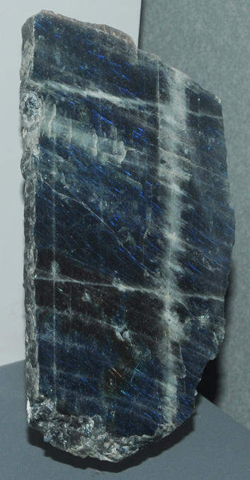
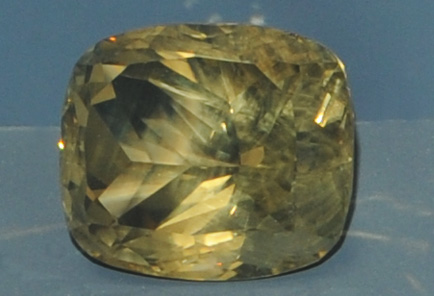
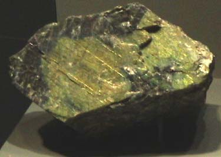

|
This labradorite specimen is about 10 x 20 cm and is from Newfoundland.
| 
This labradorite gem is labeled as 258.2 carats. It is on the order of 5 cm across. It is from La mina de la Piedra del Dol Dorado, Chihuahua, Mexico.

This laboradorite sample is labeled as variety spectrolite. It is about 8x7 cm and is from Ylijarvi, Karelia, Finland.
|